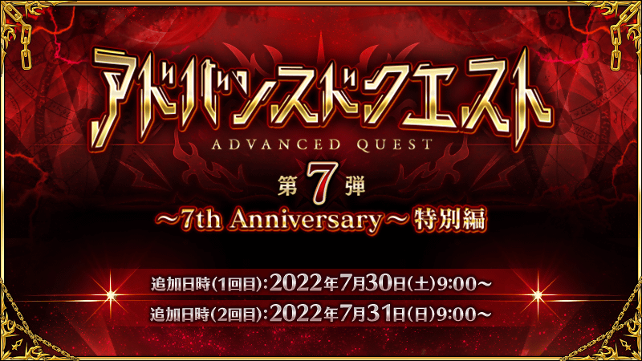
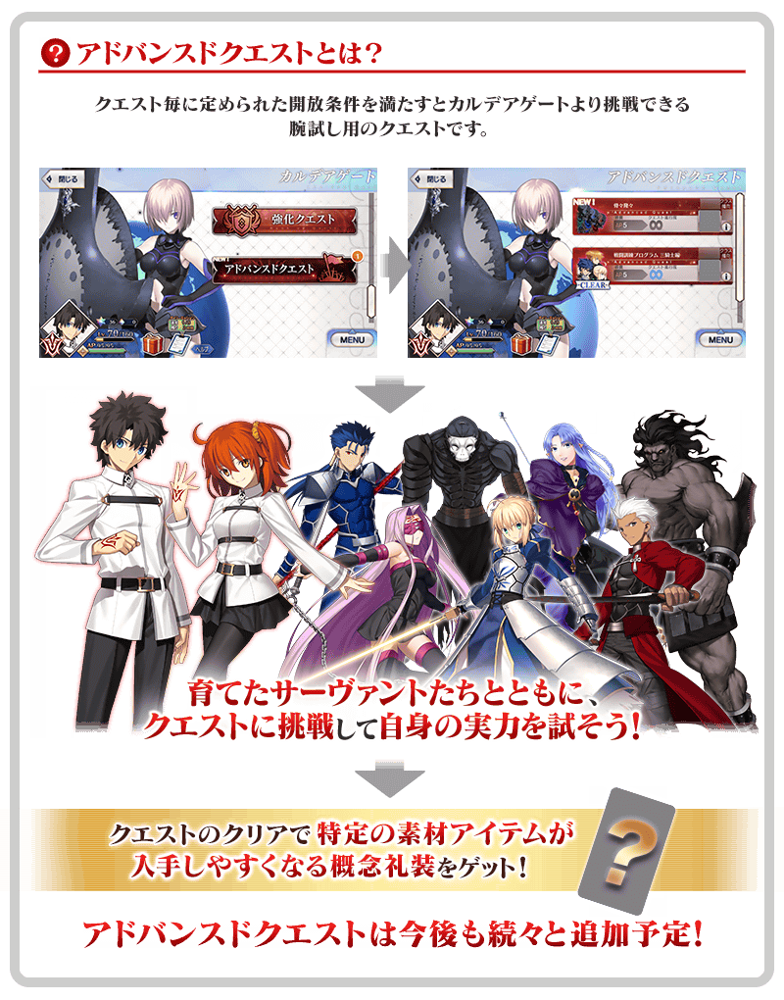
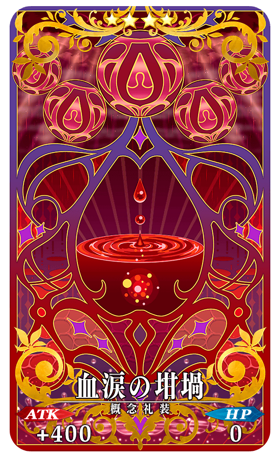
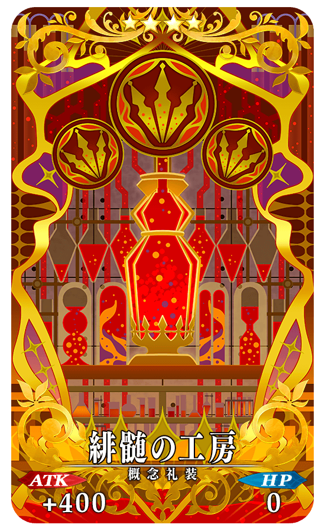
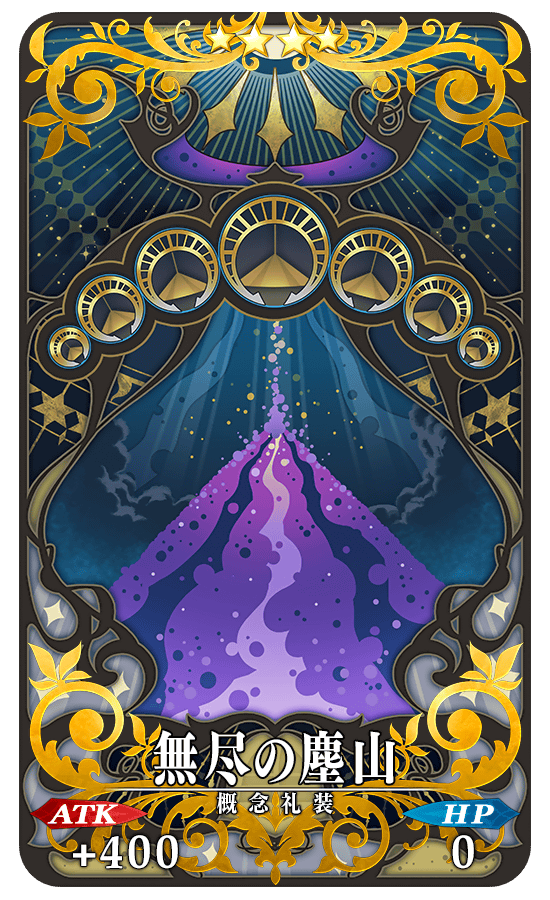
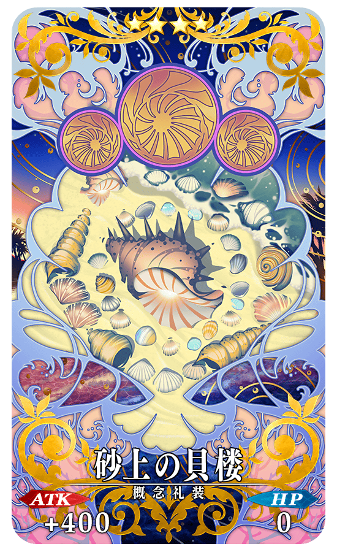
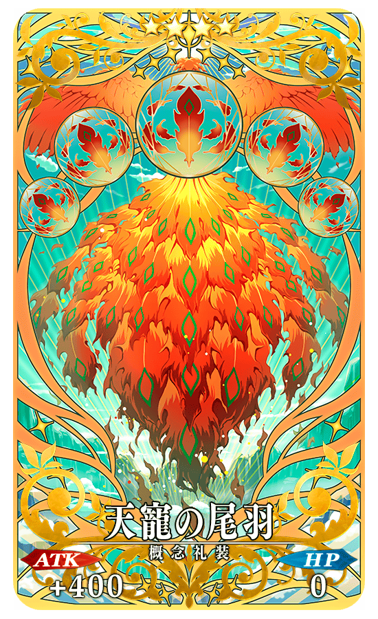
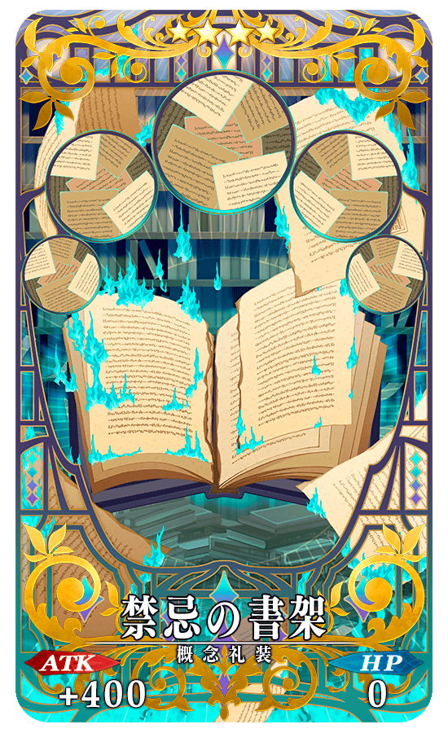
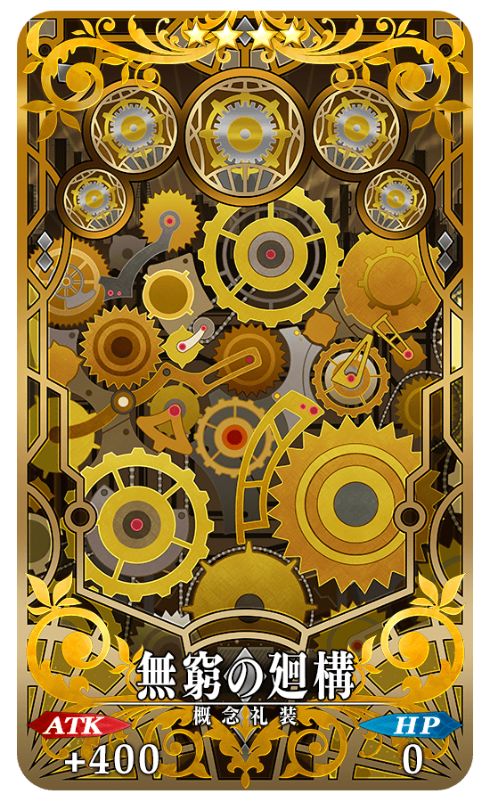

只能靠自己培育的從者來挑戰的測試用關卡「進階關卡」的第7彈在迦勒底之門內永久追加。
本次做為「7th Anniversary 特別篇」，分成2022年7月30日(六)與7月31日(日)的2次，追加全部7個的進階關卡！
通過所有的話，可包含2張新概念禮裝的7張特別概念禮裝！

進階關卡能挑戰無數次。變更從者和概念禮裝的組合等，發掘最適合的戰術吧！
◆追加時間◆
第1次:2022年7月30日(六) 8:00～
第2次:2022年7月31日(日) 8:00～
※關卡沒有舉辦期限。
※本頁面皆為開發中圖片。會有與實際圖片相異的情況。
◆在進階關卡中的注意點◆
・關卡通過報酬、戰利品、御主EXP、絆點數只可在初次通過時獲得。
・請注意在進階關卡沒有文字冒險部份。
・進階關卡中無法選擇支援從者，只能靠自己的從者進行戰鬥。
・進階關卡的戰鬥無法接關。
並且，舉辦達成條件包含通過「進階關卡」的「7周年記念限定任務」！

從2022年7月30日(六) 8:00，為了記念「Fate/Grand Order」7周年，以期間限定舉辦限定任務。
由於在限定任務之中也有通過「進階關卡」後可達成的任務，挑戰本次追加的「進階關卡」，也以任務的達成為目標吧！
達成限定任務的話，除了「FGO 7th Anniversary 英靈夢裝券」外，由於能入手豪華報酬手，請務必藉此機會挑戰！
【7月31日(日) 8:00追記】
通過進階關卡的話，可獲得特別的概念禮裝。
各概念禮裝是持走更容易入手特定素材道具效果的特別概念禮裝。
由於在從者培育派得上用場，請務必通過進階關卡來獲得各概念禮裝！
另外，「★4(SR)砂上の貝楼」「★4(SR)天寵の尾羽」「★4(SR)禁忌の書架」「★4(SR)無窮の廻構」包含可於目前為止的「進階關卡」入手的已經是第2張、「★4(SR)無尽の塵山」是第3張。
可在進階關卡獲得的概念禮裝，裝備多張持有同樣效果的概念禮裝後，會變得更容易入手素材道具。
收集素材道具時，活用這裡的概念禮裝吧！
※可於各自關卡獲得的概念禮裝只限1張。預定在今後的措施可獲得同様的概念禮裝。 ※各概念禮裝到最大解放前的技能效果不會變化。由於本次可獲得的概念禮裝在現在還無法最大解放，進行限界突破時請注意。
【7月31日(日) 8:00更新】
◆開放される進階關卡◆
| 追加時間 | 關卡 | 開放條件 | 通過報酬 |
|---|---|---|---|
| 2022年 7月30日(六) 8:00～ |
ミスティック・ドライ・アイズ | 通過「第五特異點 北美神話大戰 合眾為一」 | 概念禮裝 ★4(SR)血涙の坩堝 new |
| キャプテン・スカサハ特別指導 | 通過「第七特異點 絕對魔獸戰線 巴比倫尼亞」 | 概念禮裝 ★4(SR)砂上の貝楼 |
|
| バード・パニック | 通過「第四特異點 死界魔霧都市 倫敦」 | 概念禮裝 ★4(SR)天寵の尾羽 |
|
| 2022年 7月31日(日) 8:00～ |
掟の街 | 通過「亞種特異點Ⅰ 惡性隔絕魔境 新宿」 | 概念禮裝 ★4(SR)緋髄の工房 new |
| 禁忌の魔導書 | 通過「第六特異點 神聖圓桌領域 卡美洛」 | 概念禮裝 ★4(SR)禁忌の書架 |
|
| 謎の終末装置 破壊指令 | 通過「第五特異點 北美神話大戰 合眾為一」 | 概念禮裝 ★4(SR)無窮の廻構 |
|
| 戦闘訓練プログラム エクストラ編Ⅰ | 通過「終局特異點」 | 概念禮裝 ★4(SR)無尽の塵山 |
【7月31日(日) 8:00更新】
|  |
新登場
|
|  |
新登場
|
|  |
★★★★SR
|

|  |
★★★★SR
|
|  |
★★★★SR
|
|  |
★★★★SR
|
|  |
★★★★SR
|
其他還有，「7周年記念限定任務」以期間限定同時舉辦！
關於詳情，請自下述橫幅確認。
■「7周年記念限定任務」詳細情報